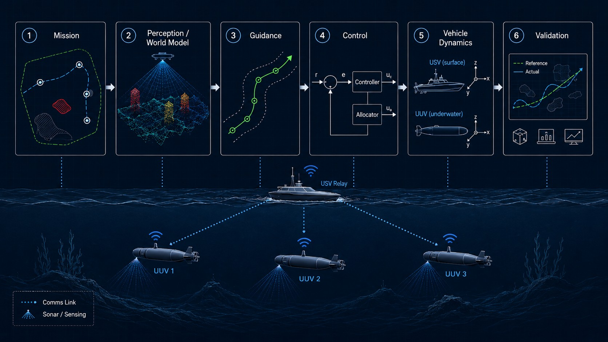
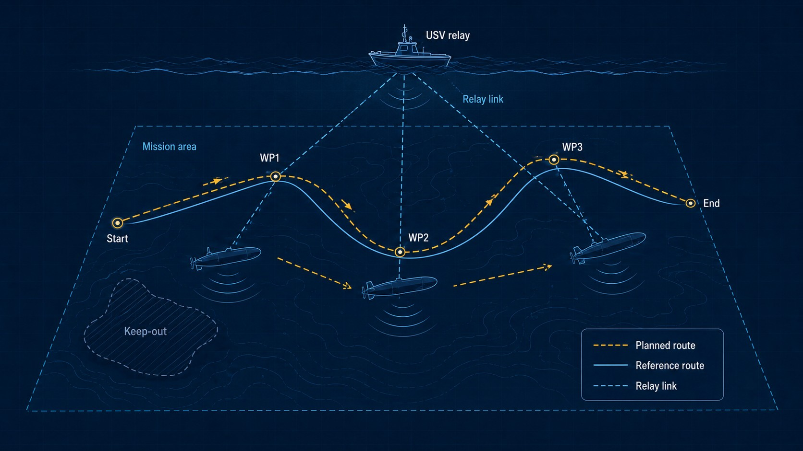
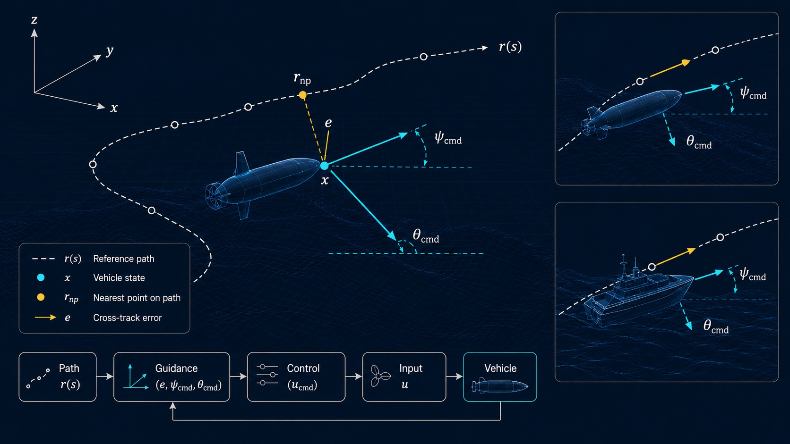
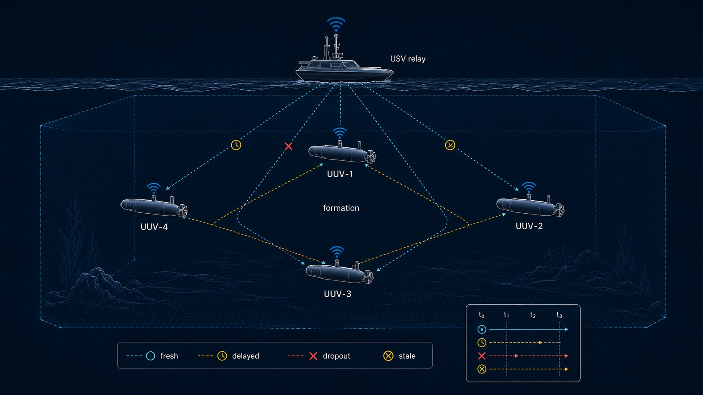
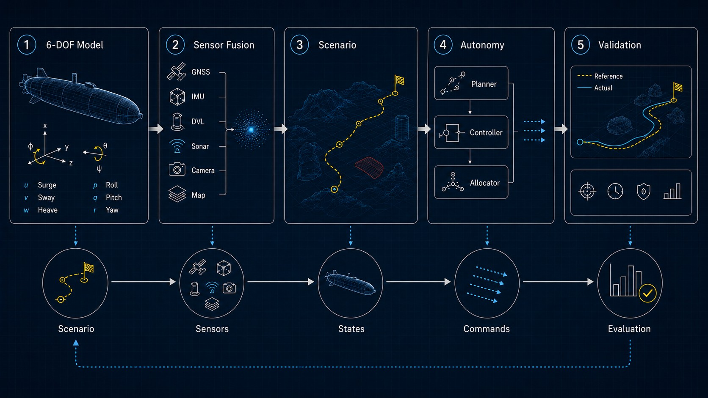
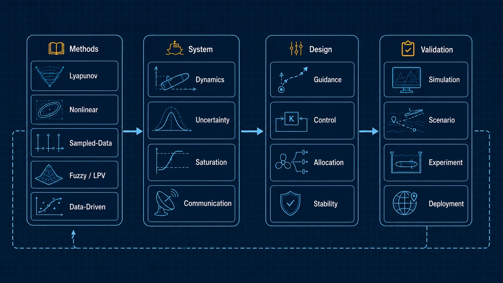

Mission
Mission region, route plan, operational constraints, and vehicle-level tasks.
Research
MUV Lab develops guidance, control, simulation, and autonomy technologies for unmanned underwater and surface vehicles operating under uncertainty, actuator constraints, and communication limitations.
Research Architecture
MUV Lab studies the complete autonomy pipeline: mission definition, world modeling, 3-D guidance generation, nonlinear control, vehicle dynamics, cooperative operation, and simulation-based validation.
System-Level View
Mission → World Model → Guidance → Control → Vehicle Dynamics → Validation

Mission region, route plan, operational constraints, and vehicle-level tasks.
Sensor fusion, state estimation, bathymetry, environment, and uncertainty.
3-D reference path, waypoints, heading/pitch commands, and formation references.
Tracking, allocation, saturation handling, robustness, and disturbance rejection.
UUV / USV dynamics, 6-DOF motion, actuators, hydrodynamics, and disturbances.
Simulation, mission replay, trajectory metrics, safety checks, and performance evaluation.
Core Research Tracks
01 / Mission Autonomy
Mission-level autonomy for unmanned maritime systems, including path planning, path following, waypoint management, mission sequencing, and autonomous operation in underwater and surface environments.

02 / 3D Guidance and Control
Nonlinear guidance and control algorithms for marine vehicles with spatial path-following objectives, underactuated dynamics, actuator limits, model uncertainty, and environmental disturbances.

03 / Cooperative Operation
Cooperative operation of multiple unmanned maritime vehicles under realistic underwater communication constraints, including low-rate acoustic links, packet delay, packet dropout, stale-packet rejection, and predictor-based coordination.

04 / Simulation and Validation
Simulation and validation connect theory, software, and mission operation. We develop simulation environments that combine 6-DOF vehicle dynamics, actuator models, sensor-fusion scenarios, ocean-current effects, communication constraints, autonomy algorithms, and mission-level performance evaluation.

05 / Control Theory
The theoretical foundation of MUV Lab includes nonlinear control, sampled-data control, fuzzy/LPV/LMI systems, input saturation, residual compensation, Lyapunov methods, robust control, and data-driven control.

Technical Stack
3D path following · waypoint guidance · formation reference generation · mission-oriented guidance
Nonlinear control · robust control · sliding-mode control · saturation handling · control allocation
Formation control · low-rate communication · packet delay · packet dropout · distributed coordination
6-DOF vehicle dynamics · hydrodynamic models · digital twin · mission-level validation
MATLAB / Simulink · Python · C/C++ · scenario simulation · algorithm implementation